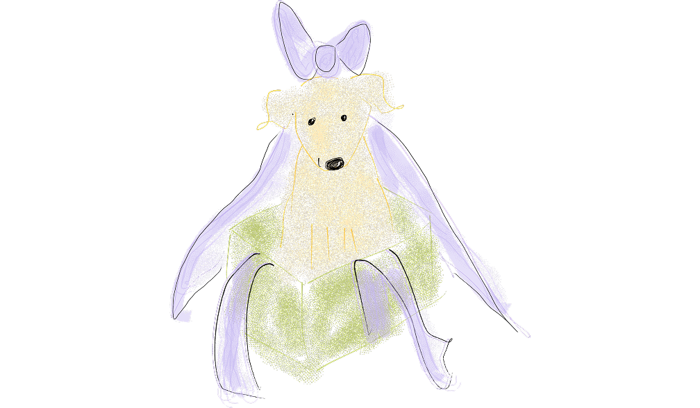

Herr & Fru Naderi 27/6 2027
Kontakt: claranillsson@gmail.com / oskarhamidi.1@gmail.com
Här hittar du information ochs var på vanliga frågor.
Under bröllopsdagen är klädkod “Kavaj”, gärna midsommartema. Färgerna grönt & vitt är reserverat för brudparet så välj något annat. Vi kommer ha midsommarkransverkstad på torsdagen och uppskattar om alla gäster har midsommarkrans under ceremonin, men vi kommer såklart inte tvinga någon att ta på sig något man inte är bekväm med. Själva ceremonin kommer ske på gräs, tänk på att ta skor som tål det (t.ex. klackar som inte sjunker ner för mycket).
Övriga dagar är det klädkod “sommarfin”. Tänk på att du eventuellt kommer vilja vara ute mycket, packa för bad, promenader i terräng, regn och eventuellt kyliga kvällar och en och annan mugga.
Det vi allra helst vill ha är er tid, engagemang och rumpor på dansgolvet. Det vi näst helst vill ha är pengar till vår bröllopsresa till Rom. En insamling kommer skötas av Christina & Klara.
Från Lurö Krog kommer vi få frukostbuffé, lunch & middag varje dag. Vi kommer även tillhandahålla all dryck. Det finns kyl och enklare kök att låna i samma byggnad som krogen. Det är fritt fram att ta med kompletterande mat, dryck och snacks. Det finns inte butik på ön.
Specialkost specificerar du i din anmälan.
Ni kommer få ett tilldelat boende innan ankomst. Stugorna är enkla med el och värme men inga toaletter. Vi har gemensamma toaletter & tre duschar i ett hus nära stugorna. På bröllopsdagen kommer alla stugor få en specifik duschtid. Gör gärna din “everything-shower” hemma innan avresa och tänk på att inte planera allt för avancerad outfit och frisyr.
Du betalar för att ta dig till Spikens fiskebåtshamn. Efter det bjuds självklart kalaset på av oss.
Barn & Djur är välkomna, men vi uppmanar alla att lägga upp helgen så att det finns utrymme för att ge oss vår bästa present: your inner party animal, och att gå och lägga dig när du i vanliga fall går upp. Ni som känner oss vet att det är “När man festar festar man och då festar man rejält” som gäller för bröllopsdagen. Det är även bra att komma ihåg att det inte är garanterat att ni får eget boende.
OSA senast på Alla Hjärtans Dag, 14 februari 2027.

Herr & Fru Naderi 27/6 2027
Kontakt: claranillsson@gmail.com / oskarhamidi.1@gmail.com